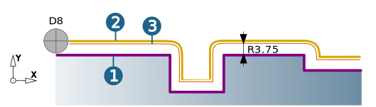
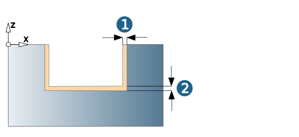
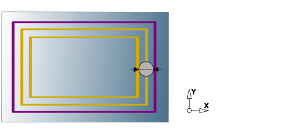
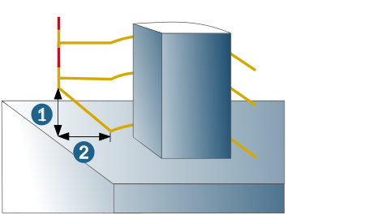

Parameters
Path compensation
Center path: hyperMILL calculates a toolpath that can be machined using the specified tool without collisions. Stock allowances in XY are taken into account.
Select this function if your controller does not offer the path compensation feature.
Note
The tool diameters must be adhered to exactly during machining. If tool diameters vary, the NC program has to be corrected.
(1) Contour (selected in hyperMILL).
(2) Center path (calculated by hyperMILL) corresponds to NC path.
 |
Compensated path: hyperMILL calculates a toolpath that can be machined using the specified tool without collisions. Stock allowances in XY are taken into account.
(1) Contour (selected in hyperMILL) corresponds to NC path.
(2) Center path (calculated by hyperMILL).
(3) Center path (calculated by NC control with real tool diameter).
hyperMILL tool: D8 / R4
Real tool: D7.5 / R3.75
Tool data storage: D7.5 / R3.75
|  |
Max. compensation value: The NC control can be corrected up to the defined value. Default = Tool radius * 0.01 or Nominal diameter * 0.01 (for chamfer cutters).
Compensated center path: Only available if enabled for the job list on the Setup dialog page. hyperMILL calculates a toolpath that can be machined using the specified tool without collisions, including the path compensation.
(1) Contour (selected in hyperMILL)
(2) Center path (calculated by hyperMILL) corresponds to NC path
(3) Center path (calculated by NC control with real tool diameter)
hyperMILL tool: D8 / R4
Real tool: D7.5 / R3.75
Tool data storage: D-0.5 / R-0.25
 |
Comp. finish pass only: Only available for compensated center path. The radius compensation occurs for the final finish pass only. The output of all other paths is centered, i.e., the tool actually used must not be larger than the programmed tool.
Allowance
Choose Allowance XY (1) and Allowance Z (2). Remaining material that is to be removed in subsequent fine machining. Corresponds to the distance from the final contour that the cutter has to keep
|  |
Vertical infeed mode
Fixed step: The value defined under infeed for the vertical infeed is retained. The value for the last infeed is automatically adjusted to the machining depth (dialog page → ).
Fit step: The value defined under Infeed for the vertical stepdown is automatically adjusted in such a way that all of the Z distances are the same. This is done while taking account of the machining depth (dialog page → ).
Infeed
Vertical stepdown: Z infeed to the next machining pass.
Finish allowance: The finish allowance is subtracted from the machining depth (top, bottom).
Horizontal infeed mode
Fixed step: The value defined under Lateral infeed area for the lateral infeed is retained. The value of the last infeed is automatically adjusted to the total infeed.
Fit step: The value defined under Lateral infeed area for the lateral infeed is automatically adjusted in such a way that all values are the same. This is done while taking account of the total infeed.
Lateral infeed area
Total infeed: For pre-machined contours with constant stock allowances, this allowance can be removed parallel to the contour in several horizontal stepovers.
Usage:
-
Rework-machining premachined contours whose stock allowance cannot be cleared with one horizontal stepover
-
Clearing open pockets
Stepover: Stepover in the XY plane as a factor of the cutter diameter.
Finish path: The value is subtracted from the machining depth (top, bottom).
|  |
Additional options
Finish only last level: a finish pass is performed on the lowest level.
Spring path: for closed contours, an additional finish pass is performed for each Z level, which removes fine machining cavities, thus increasing the surface quality. Define the number of empty cuts to be performed using Pass number.
Prefer spiral: Wherever possible, there is a spiral infeed to the next machining pass. Only available when the Adjust vertical stepdown option is used as the vertical infeed mode, the finishing allowance is 0 and the Spring path option is not enabled.
 |
In addition, the following conditions apply:
(1) The defined contour is closed and will not become an open contour by trimming or stop surfaces.
(2) If the option fixed step is used as a horizontal infeed mode, the total infeed must be greater/equal to the lateral infeed.
(3) If the Fit step option is used as a Horizontal infeed mode, the Finishing allowance must be 0.
Retract mode
For information on the retract mode, see section Retract mode and for information on the clearance plane and clearance distance, see section Clearance.
Production mode: Rapid tool movements occur as the shortest link between the infeed planes, while taking into account a possibly defined allowance. This minimizes the number of empty paths. If a direct lateral link is not possible, a collision-free polygonal movement is made.
Warning
If no stock is selected, you must ensure that the overall allowance is lower than the remaining material on the model.
Clearance
Axial clearance / Lateral clearance: Minimum distance in an axial (1) or lateral (2) direction from the surface of the machined part.
|  |